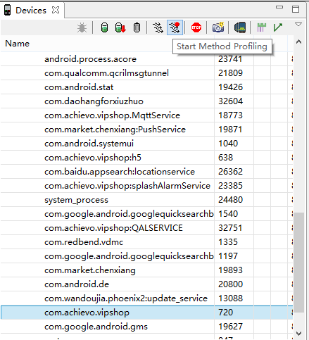
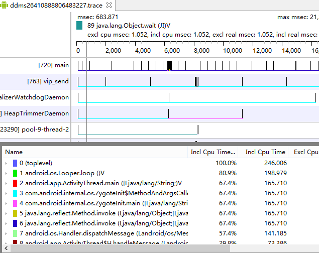
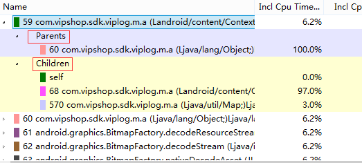
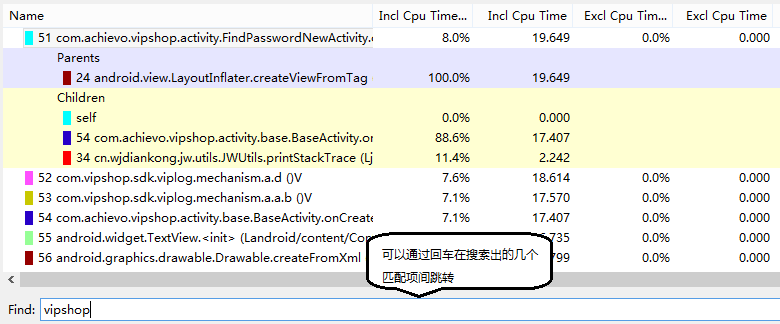
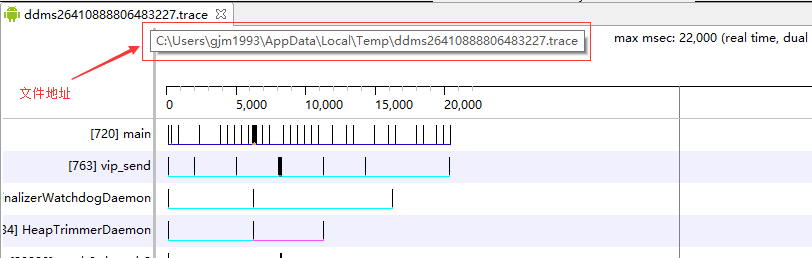

Windows平台上大名鼎鼎的Ollydbg调试器有一个trace功能，其作用是在执行程序时记录下每个被调用的API名称，分析人员只需查看API的调用序列即可知道这段代码的具体用途。这个功能非常强大，DDMS中也提供了类似的调试方法—Method Profiling（方法剖析）。
实验说明
实验选取唯品会App，以“忘记密码”功能为例，利用Method Profiling进行分析。
实验步骤
（1）第一种使用方法
在DDMS的Devices窗口中选择com.achievo.vipshop程序，点击Devices旁边工具栏上的”Start Method Profiling”按钮开启Method Profiling。

此时”Start Method Profiling”按钮的提示文字变成”Stop Method Profiling”，在登陆界面点击“忘记密码”，程序跳转到下个界面后点击”Stop Method Profiling”停止Method Profiling。稍等片刻，会自动弹出TraceView窗口。

TraceView窗口Name一栏中显示的方法调用就是需要关注的地方，每一个方法调用都有一个数字编号，不同的方法调用采用不同的颜色区分，点击方法调用左边的加号展开任意一个方法调用都会看到其下有Parents和Children两个子项，Parents表示该方法被哪个方法调用，Children表示该方法调用了哪些方法。所有的方法调用都以链表的形式依次显示，从上往下查看调用情况。

然而底部的find功能无法使用。在DDMS中不能使用find功能，需找到相应的trace文件后用traceview.bat打开。

Method Profiling生成的trace文件地址如下：

（2）第二种使用方法
除了使用DDMS外还可以手动注入代码，在想要跟踪的代码片段之间注入，可以精确到方法。
android.os.Debug提供startMethodTracing()和stopMethodTracing()两个方法来开启与关闭Method Profiling，示例如下：
|
|
record为trace文件名，上面的代码执行后会在SD卡的根目录下生成record.trace（App需要添加SD卡写入权限），record.trace包含a()执行过程中所有的方法调用与CPU占用时间等信息，接下来的分析过程相同。
startMethodTracing()的smali代码：
|
|
stopMethodTracing()的smali代码：
|
|
总结
Method Profiling功能强大，会记录Android系统底层API的调用情况，这点导致记录的数据量非常庞大，增大分析难度，要善用find功能。
实际工作中，需要结合多种方法对App进行逆向分析。